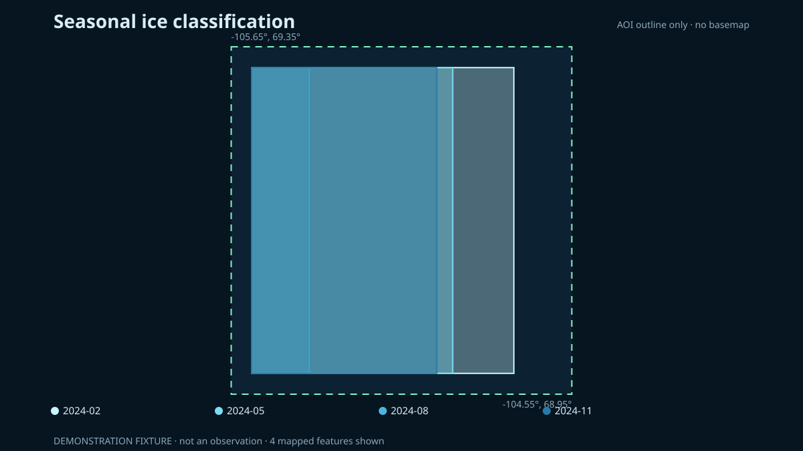

Layer B · Sentinel-1 SAR
Threshold-derived ice classification
Monthly radar composites are classified over a fixed water mask. Threshold sensitivity is shown because backscatter does not separate ice and water perfectly under all conditions.
Static fallback

Seasonal check
Classified fraction of the water mask
The coarse reference is a seasonality comparison, not pixel-level ground truth. A disagreement is a result to investigate, not something to hide.
Method
The pipeline selects one consistent Sentinel-1 acquisition mode and polarization for the year, records the alternatives it checked, composites each month, then applies the configured dB threshold inside a WorldCover water mask.
How this relates to operational ice charts
Operational sea-ice monitoring in the Canadian Arctic, such as Canadian Ice Service charts, is produced by analysts who combine several sensors and report ice using the WMO egg code and the MANICE procedures: concentration, stage of development (new, grey, thin and thick first-year, old ice) and floe size. This layer is different. It applies one backscatter threshold to Sentinel-1 C-band SAR as a screening baseline for ice versus open water. It does not classify stage of development, floe size or ridges, and it is not a substitute for an ice chart.
Calibration attempt: not validated
We tested whether one backscatter threshold on real 2024 Sentinel-1 Extra Wide data reproduces the seasonal ice cycle that NSIDC reports for this area. It does not. The best HH threshold (-24 dB) correlates 0.40 with the reference and calls open water ice in August and September. HV sits near the noise floor, with winter ice and summer water both near -30 dB. Both are worse than guessing the yearly average.
The reference is coarse (25 km cells, 44 km study box), so the test is not conclusive either way. Until a finer reference such as Canadian Ice Service charts is used, the ice map on this page stays a labelled demonstration. Details and the code to repeat it: docs/CALIBRATION.md.
Principal limitations
- Wind-roughened water and some ice types can have overlapping backscatter.
- Incidence angle, orbit direction, melt state and snow cover affect the signal.
- The fixed coast mask can be wrong near shore.
- Months without compatible scenes remain missing rather than interpolated.
Reproduce this
Run the live pipeline’s ice part or open
notebooks/02_ice_extent_s1.ipynb on GitHub. The selected
acquisition characteristics are stored in
ice_summary.json.